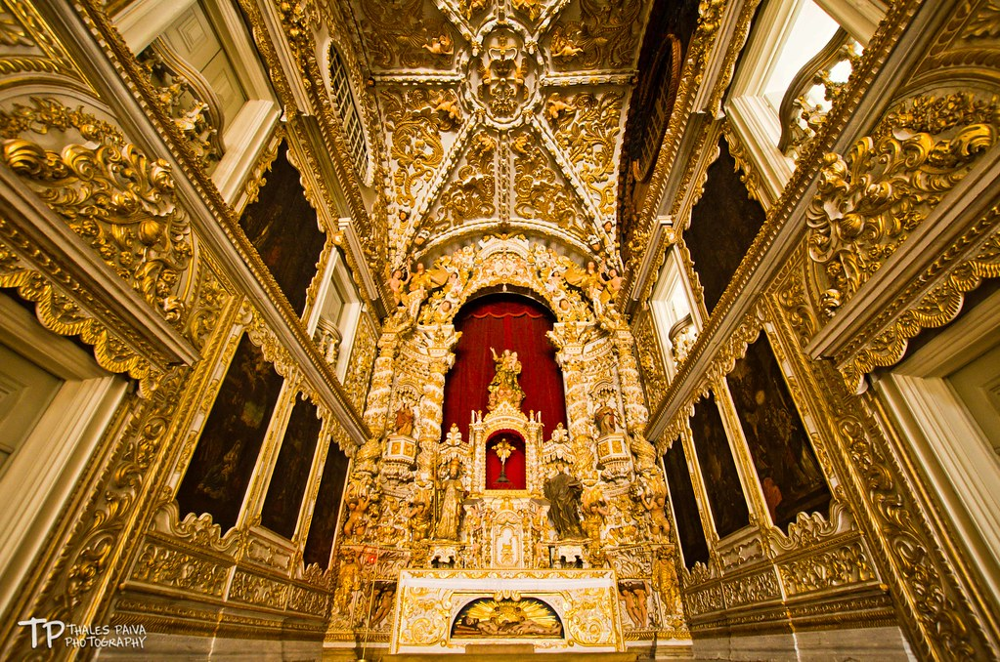

A Igreja Madre de Deus é um templo católico da cidade do Recife, capital do estado brasileiro de Pernambuco. Situa-se ao lado do prédio do antigo Convento dos Padres Oratorianos, primeiro convento da Ordem de São Filipe Néri no Brasil, ao qual era ligada através do extinto claustro.
História
A edificação da Igreja Madre de Deus foi autorizada em 1680, tendo como construtor e doador do terreno o "mascate" Antônio Fernandes de Matos. Em 1709 o templo foi concluído, apresentando fachada com duas torres e o corpo central em pedra.
O interior da nave é um amplo salão com capelas laterais e um majestoso arco triunfal de severa cantaria com dois altares no arco cruzeiro. O altar-mor é de talha dourada com nichos sacrários e trono em estilo rococó. O forro entalhado da capela-mor acompanha aqueles das capelas-mores da Basílica de Nossa Senhora do Carmo e da Concatedral de São Pedro dos Clérigos. A sacristia possui grande arcaz, e um lavabo em mármore de Estremoz considerado o mais notável do Brasil, executado em Portugal. O templo abriga ainda algumas imagens que pertenceram à primitiva Igreja do Corpo Santo, demolida quando das obras de modernização do Recife.
